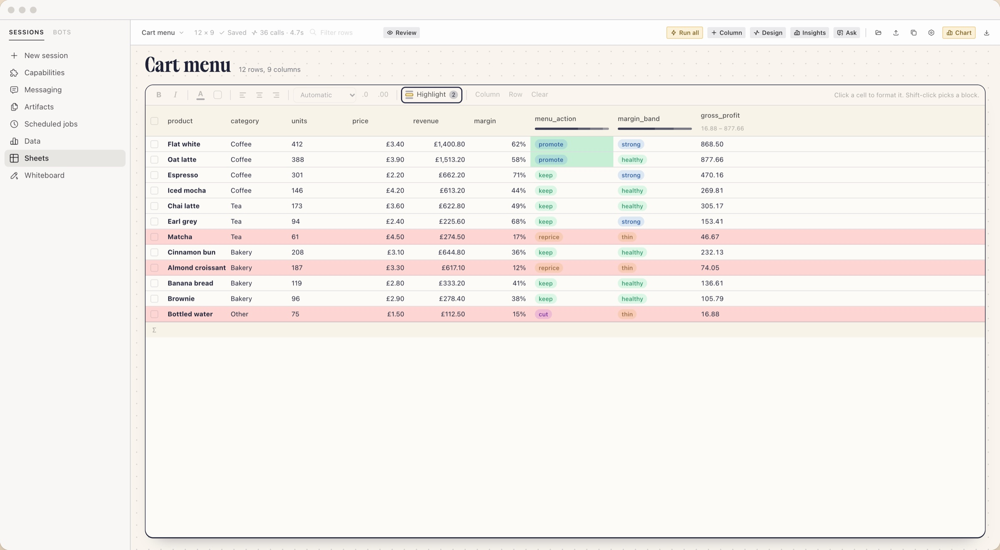
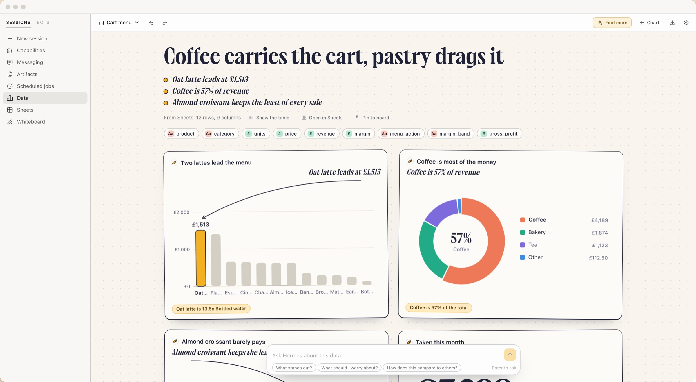
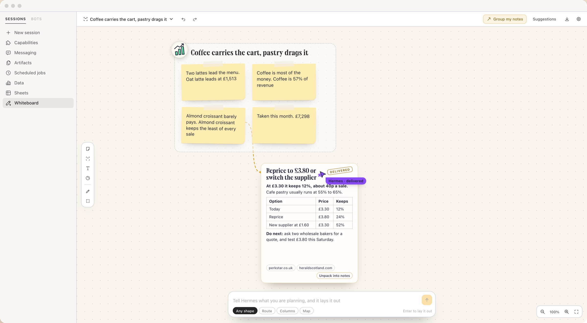

Only on a click
A handoff starts from a button on the page you are on. Nothing moves between the plugins on its own, and no model is involved in the handoff.
Three plugins for Hermes Desktop
A sheet, a report and a board that hand work to each other. Format your rows, chart them in one click, and pin what you find to a board. Hermes suggests at every step, and nothing lands until you accept it.
01 Sheets
Open an Excel workbook or a CSV, or ask for a sheet and a Hermes agent finds the rows on the web. Hermes reads it and suggests columns worth adding. You tick the ones you want, and it answers every row.
hermes plugins install Adolanium/hermes-sheets
02 Data
Hermes reads the table and suggests a headline and a handful of charts, each making one point with an arrow to the mark it is about. You accept the ones you want onto the page.
hermes plugins install Adolanium/hermes-data
03 Whiteboard
Say what you are planning and Hermes lays it out as a route, columns or a map. Add rough notes and it proposes groups and action items. Hand an action to Hermes and an agent does it on the board.
hermes plugins install Adolanium/hermes-whiteboard
Together
A handoff starts from a button on the page you are on. Nothing moves between the plugins on its own, and no model is involved in the handoff.
A table that arrives becomes a new grid or a new report. Notes land as one new group beside your board, and one undo takes them off again.
The three pages run in one app window and pass the table with a browser event. No file is written and no backend is called for it. Other plugins you have switched on share that window and could read such an event.
Install
Each plugin needs Hermes 0.22.6 or later and nothing else: no packages, no build step. Switch them on under Capabilities, then Plugins.
hermes plugins install Adolanium/hermes-sheetshermes plugins install Adolanium/hermes-datahermes plugins install Adolanium/hermes-whiteboardYour models and your usage costs apply to every model call, and each page shows the count before it runs.